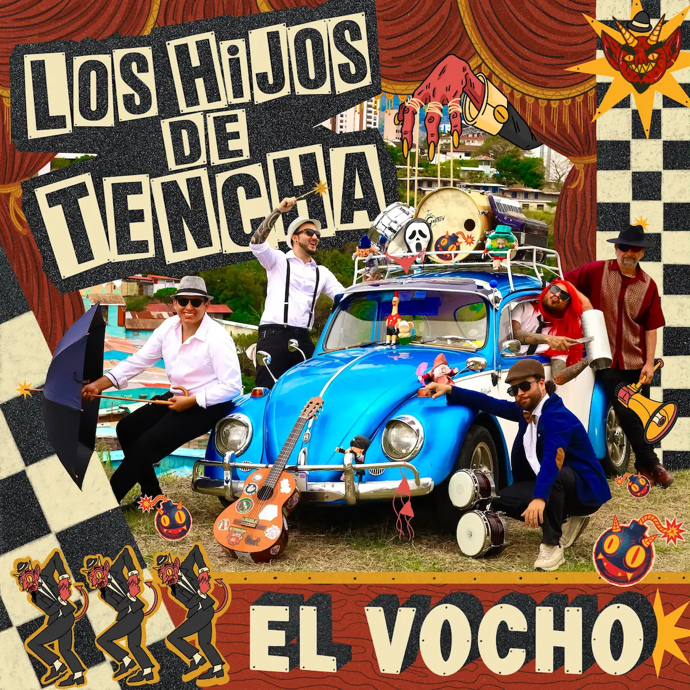
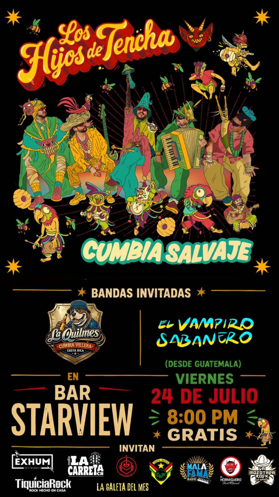

Conoce las últimas noticias, conciertos, lanzamientos y novedades oficiales de la banda.

¡Qué emoción! Queremos contarles de primera mano que desde el 27 de junio de 2026, nuestro nuevo hijo musical, "El Vocho", ya está rodando en todas las plataformas digitales. Y cuando decimos "rodando", es porque esta canción tiene mucha marcha... y también mucho humor.
Si nos conocen, saben que nos encanta mezclar ritmos, pero en esta ocasión nos fuimos de lleno por el Ska para darle vida a un tema con una historia tan real como divertida. La letra nace de una situación que muchos conocen bien: lo complicado que es intentar hacer el amor dentro de un Vocho. Sí, así como lo leen. Ese carrito tan querido, tan icónico y tan lleno de nostalgia resulta ser un espacio bastante reducido para ciertas actividades. Entre lo apretado del asiento, la palanca de cambios en medio y el poco espacio para moverse, la canción narra con humor y picardía las peripecias de una pareja que intenta buscar un momento de intimidad en el famoso "Vocho".
Más allá de la anécdota divertida, la canción es un homenaje a ese vehículo que ha sido testigo de tantas historias de amor, de desamor y de aventuras juveniles. Es un tema con el que cualquiera que haya tenido un carro pequeño se va a sentir identificado. Y si no lo ha vivido, al menos se va a reír con las ocurrencias que narra la canción.
Los Hijos de Tencha somos una banda que nace desde la raíz y busca conectar con la gente a través de la fusión de ritmos como el ska, reggae, rock y cumbia. Si les gusta lo que hacemos, los invitamos a escuchar también nuestro álbum Cumbia Salvaje, disponible en todas las plataformas digitales.
"El Vocho" es un reflejo de quiénes somos y de lo que queremos compartir con ustedes: música con identidad, mucho humor y enormes ganas de hacerlos bailar. Los invitamos a darle play, compartirla con sus amigos y agregarla a sus playlists favoritas.
¡Gracias por ser parte de esta familia rodante! 🚗💨 No olviden seguirnos en nuestras redes sociales para enterarse de los próximos conciertos, lanzamientos y todas las novedades de Los Hijos de Tencha. ¡Nos vemos en la carretera... y ojalá no muy apretados! 😄
— Los Hijos de Tencha

¡La espera está por terminar, familia! En Los Hijos de Tencha estamos muy emocionados de darles la bienvenida a Tencha Noticias, un espacio donde compartiremos las novedades, lanzamientos, conciertos y todo lo que sucede alrededor de la banda. Y no podíamos inaugurar esta sección de mejor manera: muy pronto verá la luz nuestro primer álbum de larga duración, Cumbia Salvaje.
La celebración será el viernes 24 de julio a las 8:00 PM en Bar Starview, donde presentaremos oficialmente el disco en una noche llena de música, energía y mucha cumbia. ¡La entrada será completamente gratuita!
Los Hijos de Tencha somos una agrupación costarricense que fusiona la cumbia con influencias del rock, la psicodelia y otros ritmos latinoamericanos. Nuestra propuesta combina música, colores, personajes y una puesta en escena que convierte cada concierto en una verdadera fiesta.
Este disco refleja nuestra identidad musical. Cada canción mezcla la esencia de la cumbia con guitarras intensas, sonidos psicodélicos y una energía callejera que invita a bailar desde el primer hasta el último tema.
La Quilmes (Costa Rica) y El Vampiro Sabanero (Guatemala 🇬🇹) serán parte de esta gran celebración con dos presentaciones que prometen encender la pista desde el inicio.
📅 Viernes 24 de julio
🕗 8:00 PM
📍 Bar Starview
💰 La entrada será completamente
GRATIS
Agradecemos profundamente a Exhum, Radio La Carreta, TiquiciaRock, La Galeta del Mes, CostaRasta, Mala Fama Radio, El Hormiguero Rock Nacional y La Mozotada Rock por apoyar este lanzamiento.
El cupo del Bar Starview es limitado, así que les recomendamos llegar temprano para asegurar su lugar. ¡Nos vemos para desatar la Cumbia Salvaje! 🎷🔥